Evidence and task compositions
Actual application captures. A pairs compact evidence with its task; B pairs a primary visual with explicitly authored supporting evidence and its task. Existing solution components remain below. Synthetic cross-subject fixtures are labelled review material.
46 focused checks and 39 full-suite gates passed. Native zoom uses Chromium browser preferences; end captures are scrolled. Legacy unspecified layouts are preserved. Videos and tablet question references remain deferred.
Edited graph/table/task in inspector
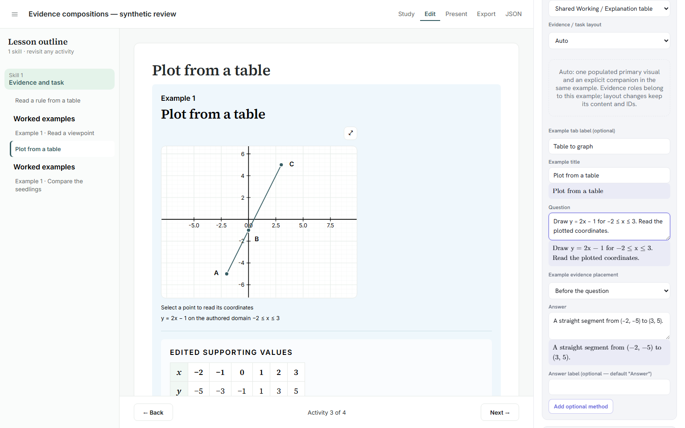
Open original-resolution PNG
Existing image editor
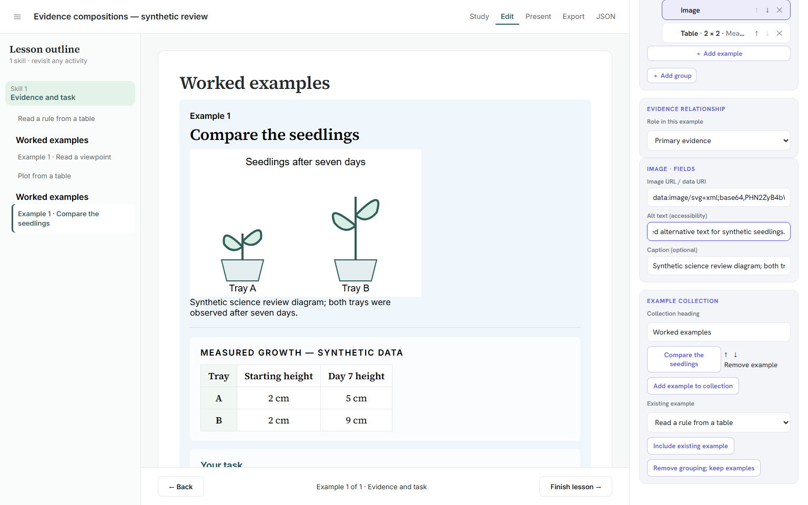
Open original-resolution PNG
Fresh JSON reopen and further edit
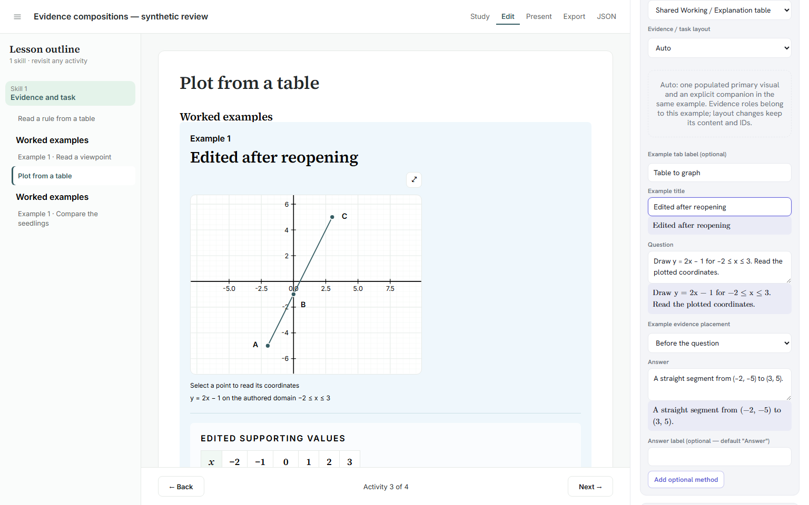
Open original-resolution PNG
A · classroom table and task
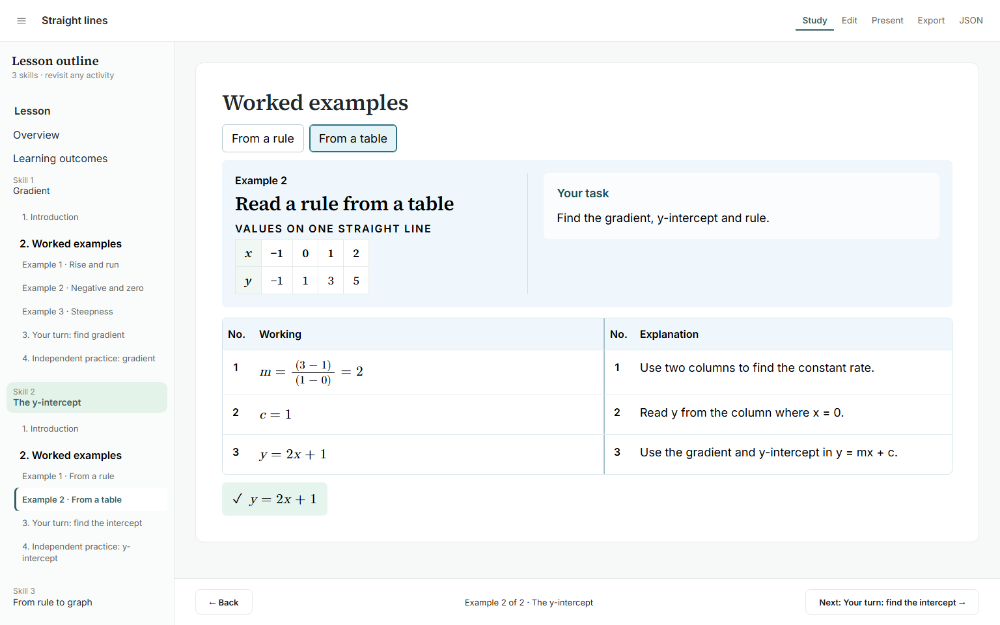
Open original-resolution PNG
B · classroom graph, values and task
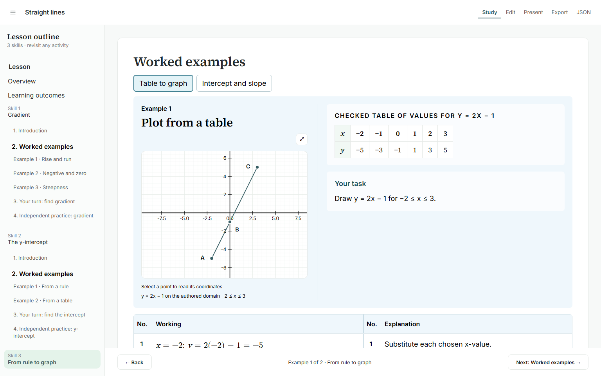
Open original-resolution PNG
Classroom author layout selector
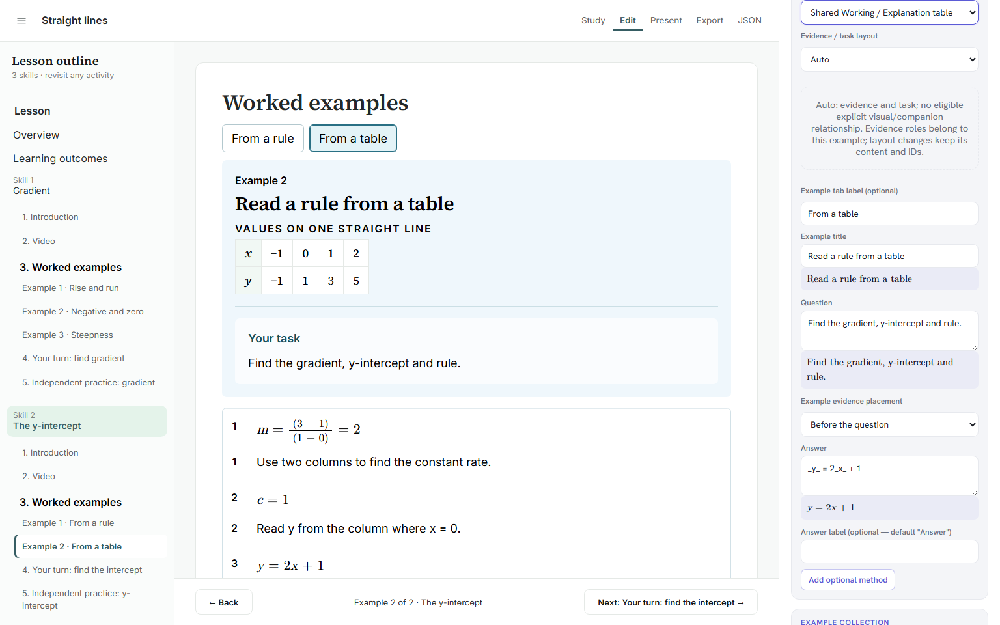
Open original-resolution PNG
Tablet · reading order
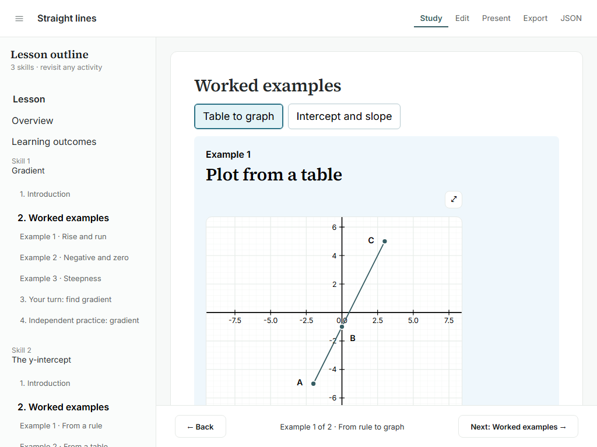
Open original-resolution PNG
rule-table-1024-task
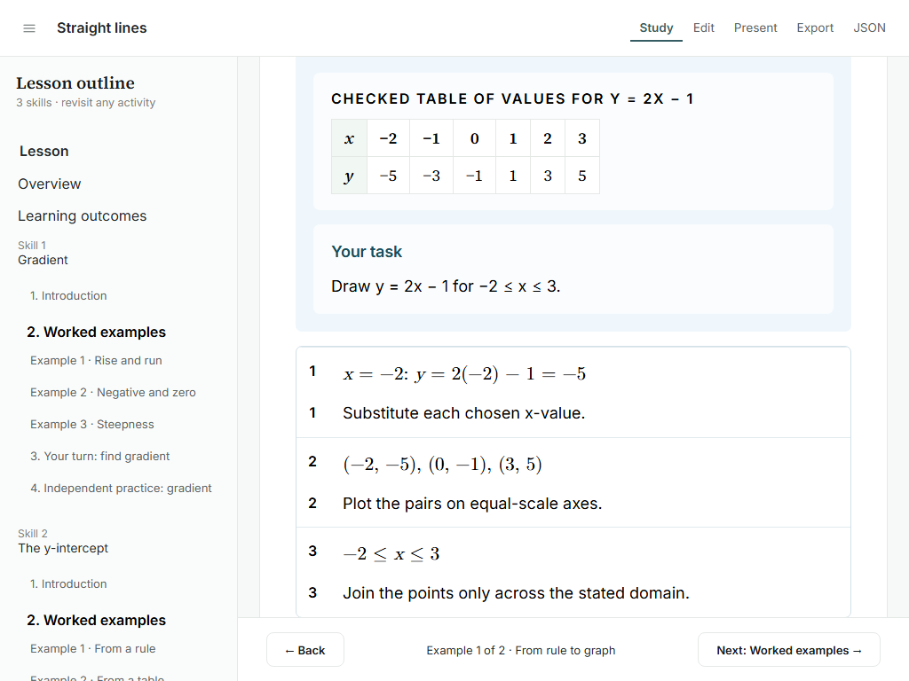
Open original-resolution PNG
Tablet · answer reachable
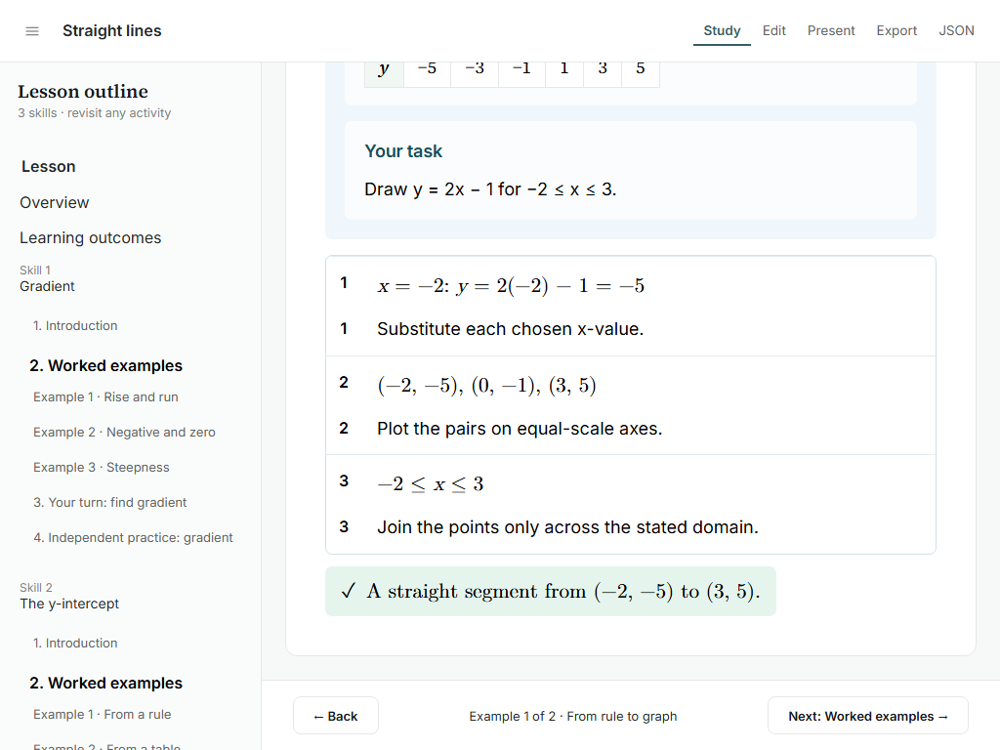
Open original-resolution PNG
Narrow · primary evidence
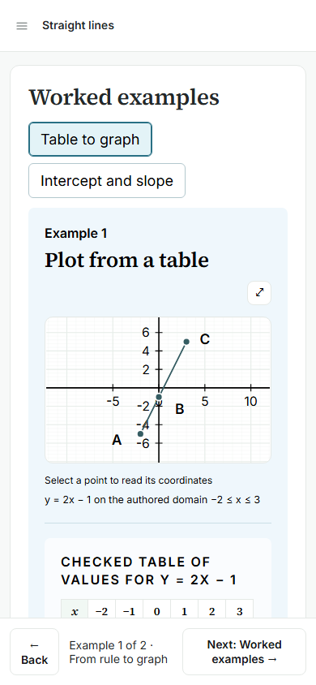
Open original-resolution PNG
rule-table-390-task
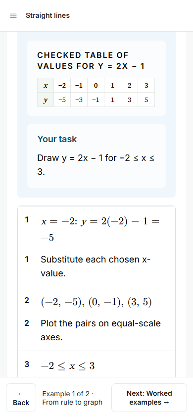
Open original-resolution PNG
Narrow · solution end
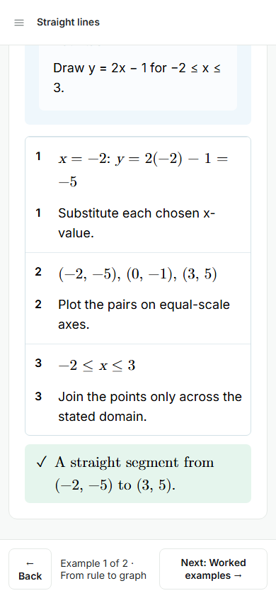
Open original-resolution PNG
A · synthetic qualitative source
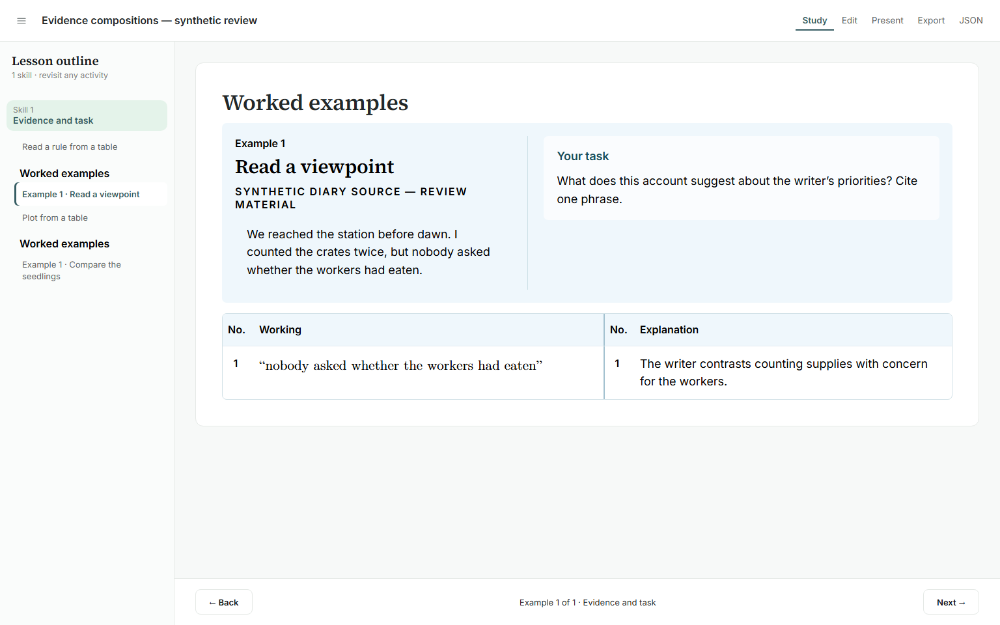
Open original-resolution PNG
B · synthetic science image and measurements
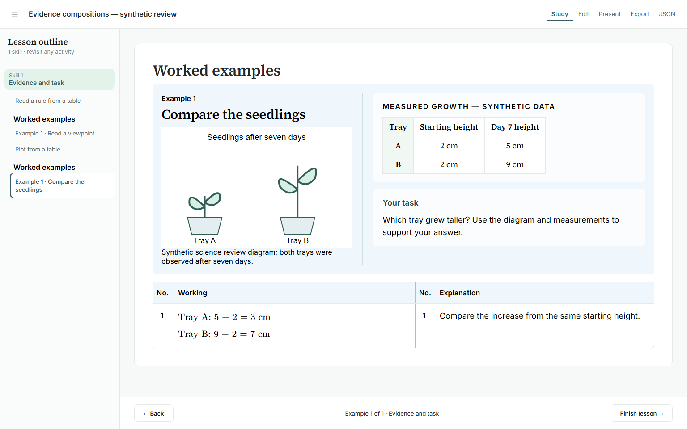
Open original-resolution PNG
Legacy Factorising unchanged
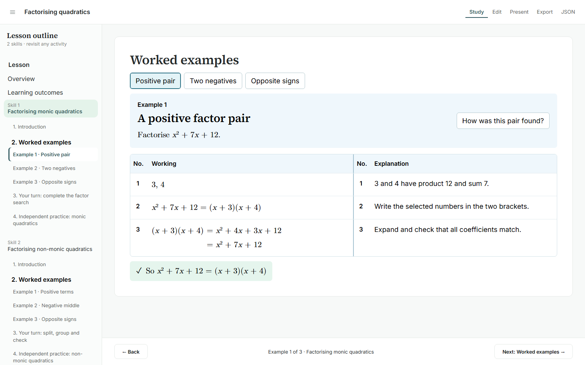
Open original-resolution PNG
Native 200% browser zoom
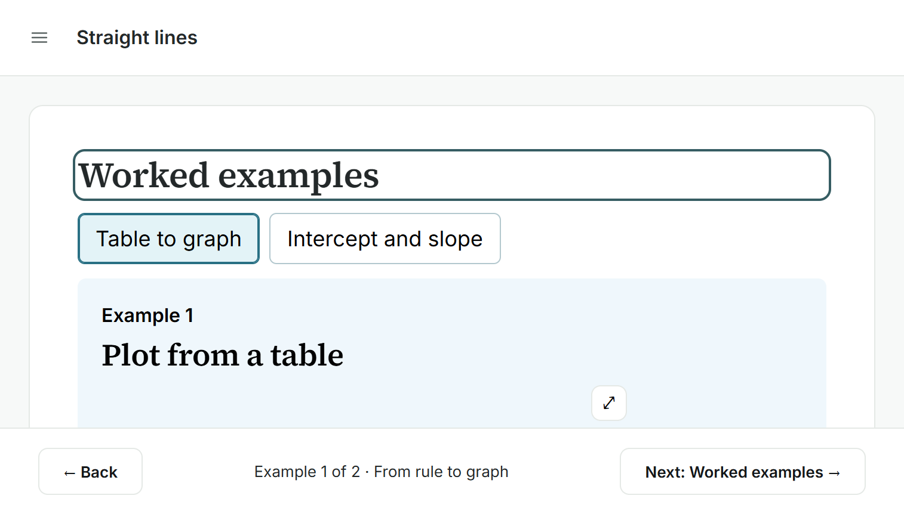
Open original-resolution PNG
Native 200% · answer reachable
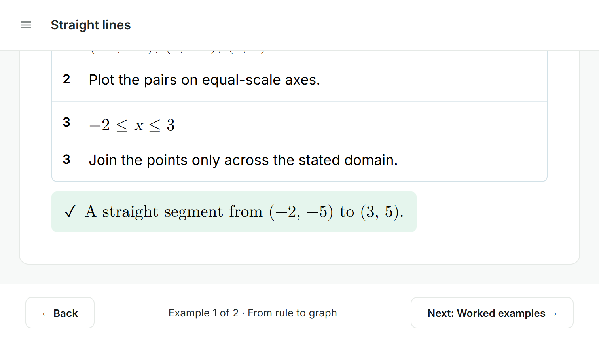
Open original-resolution PNG